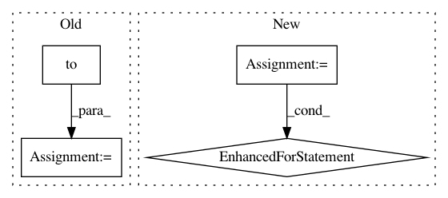

ab1d74868183e211b8ae7aa155cdcbb5f43843d8,examples/cluster_gcn.py,,test,#,56
Before Change
model.eval()
total_correct, total_nodes = [0, 0, 0], [0, 0, 0]
for data in loader:
data = data.to(device)
logits = model(data.x, data.edge_index)
pred = logits.argmax(dim=1)
masks = [data.train_mask, data.val_mask, data.test_mask]
After Change
y_pred = out.argmax(dim=-1)
accs = []
for mask in [data.train_mask, data.val_mask, data.test_mask]:
correct = y_pred[mask].eq(data.y[mask]).sum().item()
accs.append(correct / mask.sum().item())
return accs
for epoch in range(1, 31):
In pattern: SUPERPATTERN
Frequency: 4
Non-data size: 4
Instances
Project Name: rusty1s/pytorch_geometric
Commit Name: ab1d74868183e211b8ae7aa155cdcbb5f43843d8
Time: 2020-05-27
Author: matthias.fey@tu-dortmund.de
File Name: examples/cluster_gcn.py
Class Name:
Method Name: test
Project Name: pytorch/pytorch
Commit Name: d9e6750759b78c68e7d98b80202c67bea7ba24ec
Time: 2021-02-08
Author: ngimel@fb.com
File Name: test/quantization/test_workflow_module.py
Class Name: TestFakeQuantize
Method Name: _test_forward_per_tensor_cachemask_impl
Project Name: pytorch/pytorch
Commit Name: 5d45140d6874be04c22c8abba55e4438c25d2fdb
Time: 2021-01-08
Author: kshitijkalambarkar@gmail.com
File Name: test/test_reductions.py
Class Name: TestReductions
Method Name: test_reduction_empty
Project Name: rusty1s/pytorch_geometric
Commit Name: 3f0f8ca3bda791ceba269ad98a9677180abbc9f0
Time: 2019-07-27
Author: matthias.fey@tu-dortmund.de
File Name: examples/node2vec.py
Class Name:
Method Name: